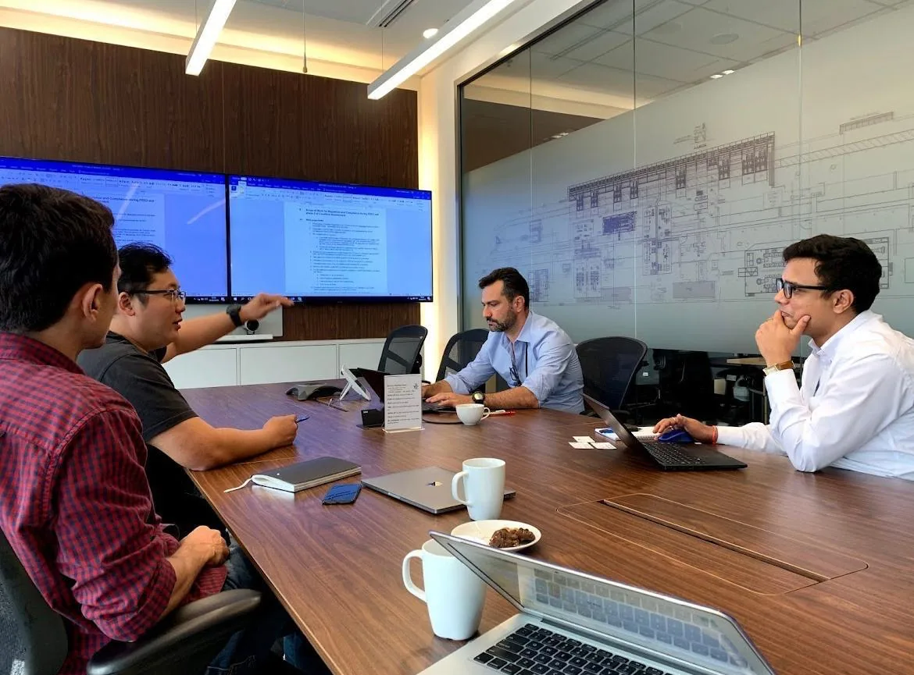

Who we are
A team of skilled and experienced professionals with strong technical expertise, offering a balanced mix of multidisciplinary knowledge and multinational diversity.

Our history
Qiji was founded in 2019 to meet the evolving needs of stakeholders within the FPSO ecosystem, providing Regulatory consultancy services shaped by the experience of our founders. Since then, Regulatory Compliance has become a core part of our work and, in collaboration with Clients, we have supported the approval to startup and the operations of multiple offshore assets before the Brazilian Authorities. Following the positive results consistently achieved over time, our Clients have increasingly trusted us with a broader scope of services, and Qiji has continued to evolve and expand its activities and deliveries in areas such as Commissioning, Inspections, Operations, and Maintenance of onshore and offshore facilities.

Get in touch with us
Our team is available 24/7 to support your needs.